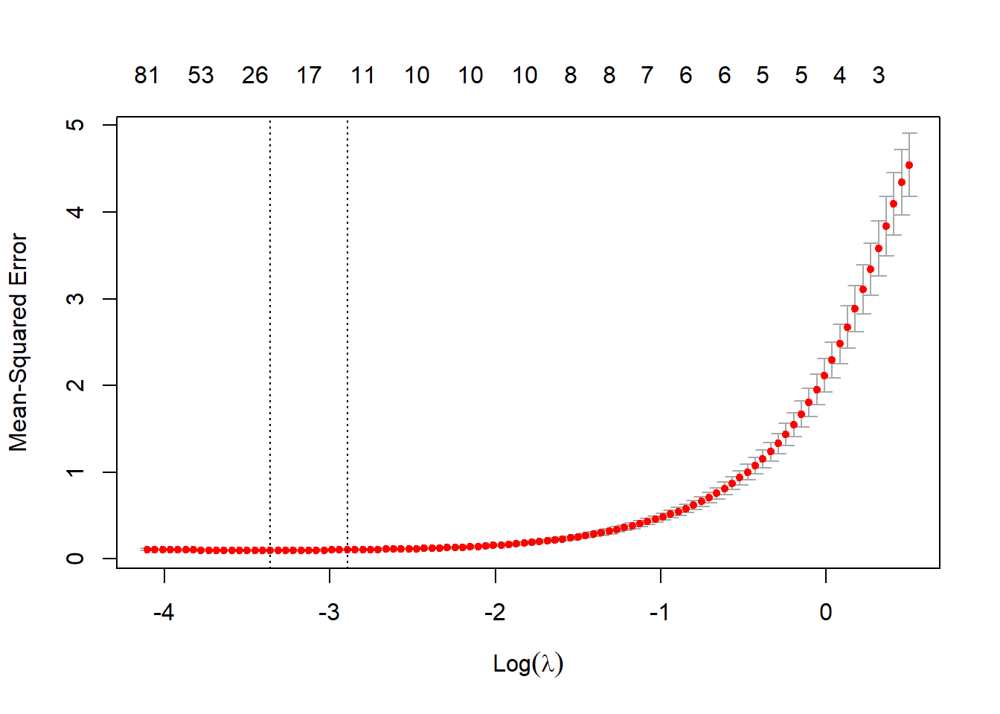
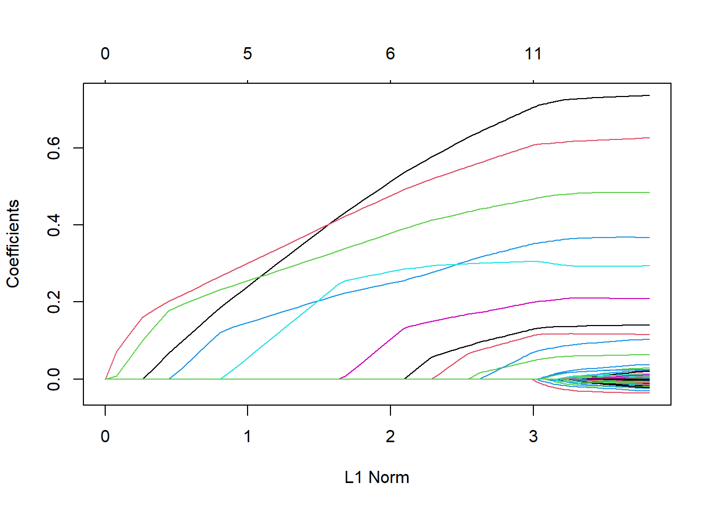
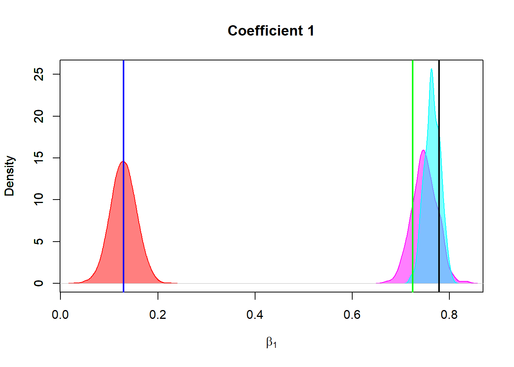

4 Linear Regression
4.1 Machine Learning
In this section, we will not make any probability assumption, and we will treat the problem only as an optimization problem.
4.1.1 Ordinary Least Squares
4.1.1.1 Model Specification
Let \(y_i \in \mathbb{R}\) be the response variable and \(x_i \in \mathbb{R}^p\) be the vector of predictors for observation \(i\), where \(i = 1, \dots, n\). The multiple linear regression model is given by:
\[ {\boldsymbol y} = {\boldsymbol X} {\boldsymbol \beta} + {\boldsymbol e} \]
where:
- \( {\boldsymbol y} \in \mathbb{R}^{n}\) is the response vector (each entry corresponds to an observation),
- \( {\boldsymbol X} \in \mathbb{R}^{n \times p}\) is the design matrix (including predictors, typically with an intercept column of ones),
- \( {\boldsymbol \beta} \in \mathbb{R}^{p}\) is the coefficient vector to be estimated,
- \( {\boldsymbol e} \in \mathbb{R}^{n}\) is the error vector.
4.1.1.2 Minimization Problem
The objective is to minimize the sum of squared errors (SSE):
\[ \min_{ {\boldsymbol \beta} } \mathcal{L}( {\boldsymbol \beta} ) = \min_{ {\boldsymbol \beta} } \| {\boldsymbol y} - {\boldsymbol X} {\boldsymbol \beta} \|_2^2. \]
Expanding the loss function:
\[ \mathcal{L}( {\boldsymbol \beta} ) = ( {\boldsymbol y} - {\boldsymbol X} {\boldsymbol \beta} )' ( {\boldsymbol y} - {\boldsymbol X} {\boldsymbol \beta} ). \]
4.1.1.3 Solution
To minimize \(\mathcal{L}(\beta)\), we take the derivative with respect to \(\beta\):
\[ \frac{\partial \mathcal{L}( {\boldsymbol \beta} )}{\partial {\boldsymbol \beta} } = -2 {\boldsymbol X} ' ( {\boldsymbol y} - {\boldsymbol X} {\boldsymbol \beta} ). \]
Setting this to zero, we obtain the normal equation:
\[ {\boldsymbol X} ' {\boldsymbol X} {\boldsymbol \beta} = {\boldsymbol X} ' {\boldsymbol y} . \]
If \( {\boldsymbol X} ' {\boldsymbol X} \) is invertible (i.e., \( {\boldsymbol X} \) has full column rank), we solve for \( {\boldsymbol \beta} \):
\[ {\boldsymbol \beta} = ( {\boldsymbol X} ' {\boldsymbol X} )^{-1} {\boldsymbol X} ' {\boldsymbol y} . \]
To check that this is a minimizer, we compute the Hessian of \(\mathcal{L}( {\boldsymbol \beta} )\):
\[ H = \frac{\partial^2 \mathcal{L}( {\boldsymbol \beta} )}{\partial {\boldsymbol \beta} \partial {\boldsymbol \beta} '} = 2 {\boldsymbol X} ' {\boldsymbol X} . \]
Since \( {\boldsymbol X} ' {\boldsymbol X} \) is positive semidefinite and positive definite if \( {\boldsymbol X} \) has full column rank, the function \(\mathcal{L}( {\boldsymbol \beta} )\) is convex. Hence, the critical point \( {\boldsymbol \beta} = ( {\boldsymbol X} ' {\boldsymbol X} )^{-1} {\boldsymbol X} ' {\boldsymbol y} \) is the unique global minimum.
The OLS solution is often denoted as:
\[ \boldsymbol{\beta}_{\text{OLS}} = (\mathbf{X}'\mathbf{X})^{-1} \mathbf{X}'\mathbf{y}. \]
Notice that we noted that \( {\boldsymbol X} \) is full column rank, when this condition is not met (or is close to not be met), other approaches are necessary.
4.1.2 Ridge Regression
4.1.2.1 Introduction
When the design matrix \(\mathbf{X}\) is not full rank, the matrix \(\mathbf{X}'\mathbf{X}\) is singular (i.e., not invertible), making it impossible to compute the least squares solution
\[ \boldsymbol{\beta}_{\text{OLS}} = (\mathbf{X}'\mathbf{X})^{-1} \mathbf{X}'\mathbf{y}. \]
This issue arises when there are more predictors than observations (\(p > n\)) or when there is multicollinearity among the predictors.
To address this, Ridge Regression introduces a small positive penalty term that regularizes the matrix \(\mathbf{X}'\mathbf{X}\), making it invertible. This method is also known as Tikhonov regularization or \(L_2\) regularization.
When \(p > n\) then we can approximate \(\mathbf{X}'\mathbf{X}\) with \(\mathbf{X}' \mathbf{X} + \lambda \mathbf{I}\), where \(\lambda > 0\) can be as small as necessary. This approximation is helpful since \(\mathbf{X}' \mathbf{X} + \lambda \mathbf{I}\) is always non-singular.
4.1.2.2 Non-singularity of the Approximation
Let \(\mathbf{X}\) be an \(n \times p\) matrix. Its SVD decomposition is
\[ \mathbf{X} = \mathbf{U} \mathbf{D} \mathbf{V}' \]
where:
- \(\mathbf{U} \in \mathbb{R}^{n \times n}\) is an orthonormal matrix (\(\mathbf{U}' \mathbf{U} = \mathbf{I}_n\)),
- \(\mathbf{V} \in \mathbb{R}^{p \times p}\) is an orthonormal matrix (\(\mathbf{V}' \mathbf{V} = \mathbf{I}_p\)),
- \(\mathbf{D} \in \mathbb{R}^{n \times p}\) is a diagonal matrix with singular values \(d_1, d_2, \dots, d_n \geq 0\) along the diagonal.
Since \(p > n\), the number of singular values is at most \(n\), meaning that \(\mathbf{X}' \mathbf{X}\) has at most rank \(n\) and is not invertible when \(p > n\).
Using the SVD of \(\mathbf{X}\), we can express
\[ \mathbf{X}' \mathbf{X} = (\mathbf{U} \mathbf{D} \mathbf{V}')' (\mathbf{U} \mathbf{D} \mathbf{V}') = \mathbf{V} \mathbf{D}' \mathbf{U}' \mathbf{U} \mathbf{D} \mathbf{V}' = \mathbf{V} (\mathbf{D}' \mathbf{D}) \mathbf{V}'. \]
Since \(\mathbf{U}\) is an \(n \times n\) orthogonal matrix, \(\mathbf{D}' \mathbf{D}\) is a \(p \times p\) diagonal matrix:
\[ \mathbf{D}' \mathbf{D} = \begin{bmatrix} d_1^2 & 0 & \dots & 0 & 0 & \dots & 0 \\ 0 & d_2^2 & \dots & 0 & 0 & \dots & 0 \\ \vdots & \vdots & \ddots & \vdots & \vdots & \ddots & \vdots \\ 0 & 0 & \dots & d_n^2 & 0 & \dots & 0 \\ 0 & 0 & \dots & 0 & 0 & \dots & 0 \\ \vdots & \vdots & \ddots & \vdots & \vdots & \ddots & \vdots \\ 0 & 0 & \dots & 0 & 0 & \dots & 0 \\ \end{bmatrix}. \]
- The first \(n\) diagonal entries are \(d_i^2\), corresponding to the squared singular values of \(\mathbf{X}\).
- The remaining \(p - n\) diagonal entries are zero, meaning \(\mathbf{X}' \mathbf{X}\) has \(p - n\) zero eigenvalues and is not full rank.
Now, consider the modified matrix:
\[ \mathbf{X}' \mathbf{X} + \lambda \mathbf{I}. \]
Using the SVD form of \(\mathbf{X}' \mathbf{X}\), we have:
\[ \mathbf{X}' \mathbf{X} + \lambda \mathbf{I} = \mathbf{V} (\mathbf{D}' \mathbf{D}) \mathbf{V}' + \lambda \mathbf{I}. \]
Since \(\mathbf{I} = \mathbf{V} \mathbf{I} \mathbf{V}'\), we rewrite this as:
\[ \mathbf{X}' \mathbf{X} + \lambda \mathbf{I} = \mathbf{V} (\mathbf{D}' \mathbf{D} + \lambda \mathbf{I}) \mathbf{V}'. \]
Since \(\mathbf{D}' \mathbf{D}\) is diagonal, adding \(\lambda \mathbf{I}\) results in:
\[ \mathbf{D}' \mathbf{D} + \lambda \mathbf{I} = \begin{bmatrix} d_1^2 + \lambda & 0 & \dots & 0 & 0 & \dots & 0 \\ 0 & d_2^2 + \lambda & \dots & 0 & 0 & \dots & 0 \\ \vdots & \vdots & \ddots & \vdots & \vdots & \ddots & \vdots \\ 0 & 0 & \dots & d_n^2 + \lambda & 0 & \dots & 0 \\ 0 & 0 & \dots & 0 & \lambda & \dots & 0 \\ \vdots & \vdots & \ddots & \vdots & \vdots & \ddots & \vdots \\ 0 & 0 & \dots & 0 & 0 & \dots & \lambda \\ \end{bmatrix}. \]
- The first \(n\) diagonal entries are \(d_i^2 + \lambda\), all strictly positive because \(d_i^2 \geq 0\) and \(\lambda > 0\).
- The last \(p - n\) diagonal entries are \(\lambda\) (also strictly positive).
Thus, all eigenvalues of \(\mathbf{X}' \mathbf{X} + \lambda \mathbf{I}\) are strictly positive, implying that it is full rank and invertible.
Since \(\mathbf{V}\) is an orthogonal matrix, the entire expression
\[ \mathbf{X}' \mathbf{X} + \lambda \mathbf{I} = \mathbf{V} (\mathbf{D}' \mathbf{D} + \lambda \mathbf{I}) \mathbf{V}' \]
is invertible, because an orthogonal matrix times an invertible diagonal matrix remains invertible.
So, even when \(p > n\), adding \(\lambda \mathbf{I}\) shifts all eigenvalues away from zero, ensuring that
\[ \mathbf{X}' \mathbf{X} + \lambda \mathbf{I} \]
is always invertible for \(\lambda > 0\). This guarantees that Ridge Regression always has a unique solution:
\[ \boldsymbol{\beta}_{\text{ridge}} = (\mathbf{X}' \mathbf{X} + \lambda \mathbf{I})^{-1} \mathbf{X}' \mathbf{y}. \]
4.1.2.3 Ridge Regression as a Minimization Problem
Instead of minimizing the standard sum of squared errors, Ridge Regression solves the following regularized problem:
\[ \min_{\boldsymbol{\beta}} \mathcal{L}(\boldsymbol{\beta}) = \min_{\boldsymbol{\beta}} \left\{ \| \mathbf{y} - \mathbf{X} \boldsymbol{\beta} \|_2^2 + \lambda \|\boldsymbol{\beta}\|_2^2 \right\}. \]
where \(\lambda > 0\) is a tuning parameter that controls the amount of regularization:
- When \(\lambda = 0\): The problem reduces to ordinary least squares (OLS).
- When \(\lambda \to \infty\): The penalty dominates, forcing \(\boldsymbol{\beta}\) toward zero, shrinking coefficients.
Expanding the loss function:
\[ \mathcal{L}(\boldsymbol{\beta}) = (\mathbf{y} - \mathbf{X} \boldsymbol{\beta})' (\mathbf{y} - \mathbf{X} \boldsymbol{\beta}) + \lambda \boldsymbol{\beta}' \boldsymbol{\beta}. \]
Taking the derivative with respect to \(\boldsymbol{\beta}\) and setting it to zero:
\[ -2 \mathbf{X}' (\mathbf{y} - \mathbf{X} \boldsymbol{\beta}) + 2 \lambda \boldsymbol{\beta} = 0. \]
Rearranging:
\[ \mathbf{X}' \mathbf{X} \boldsymbol{\beta} + \lambda \boldsymbol{\beta} = \mathbf{X}' \mathbf{y}. \]
Factoring out \(\boldsymbol{\beta}\):
\[ (\mathbf{X}' \mathbf{X} + \lambda \mathbf{I}) \boldsymbol{\beta} = \mathbf{X}' \mathbf{y}. \]
Since \(\mathbf{X}'\mathbf{X}\) may be singular, adding \(\lambda \mathbf{I}\) ensures that the matrix \((\mathbf{X}' \mathbf{X} + \lambda \mathbf{I})\) is always invertible for any \(\lambda > 0\).
Thus, the Ridge Regression solution is
\[ \boldsymbol{\beta}_{\text{ridge}} = (\mathbf{X}' \mathbf{X} + \lambda \mathbf{I})^{-1} \mathbf{X}' \mathbf{y}. \]
4.1.2.4 Conclusion
- Matrix Regularization: The term \(\lambda \mathbf{I}\) ensures that \(\mathbf{X}'\mathbf{X} + \lambda \mathbf{I}\) is always invertible because it shifts the eigenvalues of \(\mathbf{X}'\mathbf{X}\) away from zero.
- Bias-Variance Tradeoff: Ridge Regression reduces variance at the cost of introducing some bias, which can improve prediction accuracy when \(\mathbf{X}\) is ill-conditioned or when \(p > n\).
- Shrinkage Effect: Larger \(\lambda\) values shrink the coefficients towards zero, preventing overfitting.
- When \(\lambda = 0\): The problem reduces to ordinary least squares (OLS).
- When \(\lambda \to \infty\): The penalty dominates, forcing \(\boldsymbol{\beta}\) toward zero, shrinking coefficients.
The only thing that is left is selecting the value of \(\lambda\)
4.1.3 Lasso Regression
Lasso regression (Least Absolute Shrinkage and Selection Operator) is a variation of linear regression that adds a penalty (like Ridge Regression) to the loss function to promote sparsity in the coefficients, effectively setting some of them to zero (unulike Ridge Regression). This makes Lasso a useful technique for feature selection, especially when we have many predictors, some of which may be irrelevant or highly correlated.
4.1.3.1 Lasso Regression as an Optimization Problem
The Lasso regression formulation is:
\[ \min_{\boldsymbol{\beta}} \mathcal{L}(\boldsymbol{\beta}) = \min_{\boldsymbol{\beta}} \left\{ \| \mathbf{y} - \mathbf{X} \boldsymbol{\beta} \|_2^2 + \lambda \|\boldsymbol{\beta}\|_1 \right\}. \]
Where: - \(\|\boldsymbol{\beta}\|_1 = \sum_{i=1}^p |\beta_i|\) is the L1 norm of the coefficients (sum of absolute values of the coefficients), - \(\lambda \geq 0\) is the regularization parameter controlling the strength of the penalty.
The loss function consists of: 1. Residual Sum of Squares (RSS): \(\| \mathbf{y} - \mathbf{X} \boldsymbol{\beta} \|_2^2\), which measures the fit of the model (same as in ordinary least squares regression). 2. L1 Penalty: \(\lambda \|\boldsymbol{\beta}\|_1\), which shrinks the coefficients towards zero and encourages sparsity (i.e., some coefficients are exactly zero).
The objective is to minimize the sum of squared residuals along with a penalty term:
\[ \min_{\boldsymbol{\beta}} \left\{ \| \mathbf{y} - \mathbf{X} \boldsymbol{\beta} \|_2^2 + \lambda \sum_{i=1}^p |\beta_i| \right\}. \]
The key feature of Lasso is that the L1 penalty promotes sparsity by shrinking some coefficients exactly to zero, which results in a simpler, more interpretable model. The parameter \(\lambda\) controls the trade-off between fit and sparsity: - When \(\lambda = 0\): Lasso reduces to ordinary least squares regression (OLS), where no penalty is applied. - When \(\lambda\) is large: The penalty dominates, and more coefficients are shrunk to zero.
Unfortunately, unlike Ridge Regression, Lasso has no closed form solution and it is necessary to find the solution numerically.
4.1.4 Elastic Net
Elastic Net is a regularization technique that combines the strengths of Lasso and Ridge regression. While Lasso uses an L1 penalty and Ridge uses an L2 penalty, Elastic Net applies a mix of both penalties, giving a balance between sparsity and regularization strength. Elastic Net is particularly useful when there are highly correlated features or when the number of features is larger than the number of observations (\(p > n\)).
4.1.5 Elastic Net as a Mixed Penalty
The Elastic Net loss function is defined as:
\[ \min_{\boldsymbol{\beta}} \left\{ \| \mathbf{y} - \mathbf{X} \boldsymbol{\beta} \|_2^2 + \lambda_1 \|\boldsymbol{\beta}\|_1 + \frac{\lambda_2}{2} \|\boldsymbol{\beta}\|_2^2 \right\}. \]
Where: - \(\mathbf{y}\) is the \(n \times 1\) vector of observed responses, - \(\mathbf{X}\) is the \(n \times p\) matrix of predictor variables, - \(\boldsymbol{\beta}\) is the \(p \times 1\) vector of regression coefficients, - \(\|\boldsymbol{\beta}\|_1 = \sum_{i=1}^p |\beta_i|\) is the L1 norm (Lasso penalty), - \(\|\boldsymbol{\beta}\|_2^2 = \sum_{i=1}^p \beta_i^2\) is the L2 norm (Ridge penalty), - \(\lambda_1 \geq 0\) is the L1 regularization parameter (controlling the Lasso penalty), - \(\lambda_2 \geq 0\) is the L2 regularization parameter (controlling the Ridge penalty).
L1 Penalty (Lasso term): \(\lambda_1 \|\boldsymbol{\beta}\|_1\) encourages sparsity, meaning that it drives some coefficients to exactly zero. This is helpful for feature selection and reduces the complexity of the model.
L2 Penalty (Ridge term): \(\frac{\lambda_2}{2} \|\boldsymbol{\beta}\|_2^2\) shrinks the coefficients toward zero without setting them exactly to zero. This helps with multicollinearity, preventing large fluctuations in the estimated coefficients when predictors are highly correlated.
4.1.5.1 Why Use Elastic Net?
Correlation between predictors: When predictors are highly correlated, Lasso tends to select one variable and ignore the others. Elastic Net, by mixing L1 and L2 penalties, can help by including correlated variables in the model but still controlling their coefficients through the L2 penalty.
Feature selection with many predictors: In cases where the number of features \(p\) is much greater than the number of observations \(n\), Lasso can become unstable. Elastic Net helps stabilize the model by adding a Ridge component, which shrinks the coefficients of less important features without forcing them to zero.
The Elastic Net can be seen as a weighted sum of the Lasso and Ridge penalties, where:
\[ \text{Elastic Net Loss} = \lambda_1 \|\boldsymbol{\beta}\|_1 + \frac{\lambda_2}{2} \|\boldsymbol{\beta}\|_2^2. \]
You can think of \(\lambda_1\) as controlling the strength of the Lasso penalty (feature selection), and \(\lambda_2\) as controlling the strength of the Ridge penalty (shrinkage). The Elastic Net is useful when you need both sparsity (for feature selection) and regularization (to prevent overfitting).
4.1.5.2 Optimization Problem
The Elastic Net optimization problem is:
\[ \min_{\boldsymbol{\beta}} \left\{ \| \mathbf{y} - \mathbf{X} \boldsymbol{\beta} \|_2^2 + \lambda_1 \|\boldsymbol{\beta}\|_1 + \frac{\lambda_2}{2} \|\boldsymbol{\beta}\|_2^2 \right\}. \]
Objective function: The goal is to minimize the sum of squared residuals (RSS) plus the combined penalty terms.
The optimal values of \(\lambda_1\) and \(\lambda_2\) are typically chosen via cross-validation.
4.1.5.3 Connections to Lasso and Ridge Regression
When \(\lambda_2 = 0\): Elastic Net becomes Lasso regression, as the Ridge term disappears and only the L1 penalty is applied.
When \(\lambda_1 = 0\): Elastic Net becomes Ridge regression, as the L1 penalty is removed and only the L2 penalty is applied.
When both \(\lambda_1\) and \(\lambda_2\) are non-zero: Elastic Net is a combination of both regularization methods, providing a balanced approach.
4.1.6 Other Options of Regularization
In addition to Elastic Net, Ridge, and Lasso, there are other regularization methods used in machine learning and statistical modeling:
- Group Lasso:
- Formula:
\[ \min_{\boldsymbol{\beta}} \left\{ \| \mathbf{y} - \mathbf{X} \boldsymbol{\beta} \|_2^2 + \lambda \sum_{g} \|\boldsymbol{\beta}_g\|_2 \right\}. \] - Penalty: Group Lasso is used when variables are grouped, and the penalty is applied at the group level. It forces entire groups of variables to be either included or excluded from the model.
- Formula:
- Fused Lasso:
- Formula:
\[ \min_{\boldsymbol{\beta}} \left\{ \| \mathbf{y} - \mathbf{X} \boldsymbol{\beta} \|_2^2 + \lambda_1 \|\boldsymbol{\beta}\|_1 + \lambda_2 \sum_{i} |\beta_i - \beta_{i-1}| \right\}. \] - Penalty: Fused Lasso adds a penalty to the differences between adjacent coefficients, encouraging smoothness in the solution. This is useful in time series or spatial data where adjacent coefficients are expected to be similar.
- Formula:
- Bayesian Regularization:
- Formula: Bayesian regularization methods, like Bayesian Ridge Regression, assume a probabilistic model for the coefficients and add a prior distribution (often Gaussian) to the coefficients. The regularization comes from the prior’s influence on the model.
- Penalty: The prior serves as a regularizer, encouraging smaller coefficients with the Gaussian prior.
4.2 Bayesian Linear Regression
Bayesian regression provides a probabilistic framework for regression analysis by incorporating prior knowledge about the parameters. It offers a direct connection to regularized regression, by introducing a prior on the regression coefficients.
4.2.1 Basic Bayesian Linear Regression
As before, we consider the standard linear regression model:
\[ \mathbf{y} = \mathbf{X} \boldsymbol{\beta} + \mathbf{e}, \quad \mathbf{e} \sim \mathcal{N}(\mathbf{0}, \sigma^2 \mathbf{I}). \]
where:
- \(\mathbf{y}\) is the \(n \times 1\) vector of observed responses,
- \(\mathbf{X}\) is the \(n \times p\) matrix of predictor variables,
- \(\boldsymbol{\beta}\) is the \(p \times 1\) vector of regression coefficients,
- \(\mathbf{e} \sim \mathcal{N}(\mathbf{0}, \sigma^2 \mathbf{I})\) is the noise term, assumed to follow a normal distribution with variance \(\sigma^2\).
The likelihood function follows from the assumption that \(\mathbf{y}\) is normally distributed given \(\mathbf{X}\) and \(\boldsymbol{\beta}\):
\[ p(\mathbf{y} | \boldsymbol{\beta}) = \mathcal{N}(\mathbf{X} \boldsymbol{\beta}, \sigma^2 \mathbf{I}). \]
In a Bayesian framework, we assume a prior distribution for \(\boldsymbol{\beta}\). There are several (infinite) alternatives to set a prior, however in this case, we are going to work with a very basic model, in fact in a more gneral setting a prior distribution for \(\sigma^2\) is usually specified.
We take a normal prior with mean zero and covariance matrix \(\sigma^2 \mathbf{\Sigma}_\beta\), where \(\mathbf{\Sigma}_\beta\) captures prior beliefs about the relationships between the coefficients:
\[ p(\boldsymbol{\beta}) = \mathcal{N}(\mathbf{0}, \sigma^2 \mathbf{\Sigma}_\beta). \]
where \(\mathbf{\Sigma}_\beta\) is a positive definite \(p \times p\) covariance matrix.
4.2.1.1 Posterior Distribution of \(\boldsymbol{\beta}\)
Applying Bayes’ theorem, the posterior is proportional to the product of the likelihood and the prior:
\[ p(\boldsymbol{\beta} | \mathbf{y}) \propto p(\mathbf{y} | \boldsymbol{\beta}) p(\boldsymbol{\beta}). \]
Since both the likelihood and prior are Gaussian, the posterior will also be Gaussian. To derive its mean and covariance, we complete the square in the exponent.
\[ p(\mathbf{y} | \boldsymbol{\beta}) \propto \exp \left( -\frac{1}{2\sigma^2} \| \mathbf{y} - \mathbf{X} \boldsymbol{\beta} \|_2^2 \right). \]
Expanding:
\[ \| \mathbf{y} - \mathbf{X} \boldsymbol{\beta} \|_2^2 = (\mathbf{y} - \mathbf{X} \boldsymbol{\beta})' (\mathbf{y} - \mathbf{X} \boldsymbol{\beta}). \]
\[ p(\boldsymbol{\beta}) \propto \exp \left( -\frac{1}{2\sigma^2} \boldsymbol{\beta}' \mathbf{\Sigma}_\beta^{-1} \boldsymbol{\beta} \right). \]
The posterior distribution is proportional to:
\[ \exp \left( -\frac{1}{2\sigma^2} \left[ (\mathbf{y} - \mathbf{X} \boldsymbol{\beta})' (\mathbf{y} - \mathbf{X} \boldsymbol{\beta}) + \boldsymbol{\beta}' \mathbf{\Sigma}_\beta^{-1} \boldsymbol{\beta} \right] \right). \]
Expanding the quadratic term:
\[ \mathbf{y}' \mathbf{y} - 2 \mathbf{y}' \mathbf{X} \boldsymbol{\beta} + \boldsymbol{\beta}' \mathbf{X}' \mathbf{X} \boldsymbol{\beta} + \boldsymbol{\beta}' \mathbf{\Sigma}_\beta^{-1} \boldsymbol{\beta}. \]
Rewriting,
\[ - 2 \mathbf{y}' \mathbf{X} \boldsymbol{\beta} + \boldsymbol{\beta}' (\mathbf{X}' \mathbf{X} + \mathbf{\Sigma}_\beta^{-1}) \boldsymbol{\beta}. \]
Completing the square, we identify the posterior mean:
\[ \boldsymbol{\beta} | \mathbf{y} \sim \mathcal{N}(\boldsymbol{\mu}_\beta, \mathbf{\Sigma}_\beta^*), \]
where:
\[ \mathbf{\Sigma}_\beta^* = \left( \mathbf{X}' \mathbf{X} + \mathbf{\Sigma}_\beta^{-1} \right)^{-1} \sigma^2, \]
\[ \boldsymbol{\mu}_\beta = \mathbf{\Sigma}_\beta^* \mathbf{X}' \mathbf{y}. \]
4.2.1.2 Connection to Ridge Regression
If we assume that the prior covariance is a scaled identity matrix, i.e.,
\[ \mathbf{\Sigma}_\beta = \frac{1}{\lambda} \mathbf{I}, \]
then its inverse is:
\[ \mathbf{\Sigma}_\beta^{-1} = \lambda \mathbf{I}. \]
Substituting this into the posterior mean formula:
\[ \boldsymbol{\mu}_\beta = \left( \mathbf{X}' \mathbf{X} + \lambda \mathbf{I} \right)^{-1} \mathbf{X}' \mathbf{y}. \]
which is exactly the Ridge estimator:
\[ \hat{\boldsymbol{\beta}}_{\text{ridge}} = \left( \mathbf{X}' \mathbf{X} + \lambda \mathbf{I} \right)^{-1} \mathbf{X}' \mathbf{y}. \]
Thus, we see that Bayesian regression with a normal prior on \(\boldsymbol{\beta}\) corresponds to Ridge regression, where the regularization parameter \(\lambda\) is determined by the prior covariance.
4.2.1.3 Behavior of the Posterior Distribution as \(\lambda\) Varies
Since we have shown that the posterior mean of \(\boldsymbol{\beta}\) is:
\[ \boldsymbol{\mu}_\beta = \left( \mathbf{X}' \mathbf{X} + \lambda \mathbf{I} \right)^{-1} \mathbf{X}' \mathbf{y}, \]
and the posterior covariance is:
\[ \mathbf{\Sigma}_\beta^* = \sigma^2 \left( \mathbf{X}' \mathbf{X} + \lambda \mathbf{I} \right)^{-1}, \]
we can analyze the behavior of the posterior distribution under extreme values of \(\lambda\).
- When \(\lambda \to 0\) (No Regularization, Pure MLE)
As \(\lambda \to 0\), the prior becomes uninformative, meaning we are not imposing any shrinkage on the coefficients. In this case:
\[ \left( \mathbf{X}' \mathbf{X} + \lambda \mathbf{I} \right)^{-1} \to (\mathbf{X}' \mathbf{X})^{-1}, \]
assuming \(\mathbf{X}' \mathbf{X}\) is invertible. Then, the posterior mean simplifies to the ordinary least squares (OLS) estimator:
\[ \boldsymbol{\mu}_\beta \to (\mathbf{X}' \mathbf{X})^{-1} \mathbf{X}' \mathbf{y}. \]
Likewise, the posterior covariance reduces to:
\[ \mathbf{\Sigma}_\beta^* \to \sigma^2 (\mathbf{X}' \mathbf{X})^{-1}. \]
This shows that, when \(\lambda \to 0\), Bayesian regression becomes equivalent to the classical maximum likelihood estimate (MLE) from OLS, with high variance when \(\mathbf{X}' \mathbf{X}\) is ill-conditioned.
- When \(\lambda \to \infty\) (Strong Prior, Heavy Shrinkage)
As \(\lambda \to \infty\), the prior dominates and strongly shrinks \(\boldsymbol{\beta}\) toward zero. In this case:
\[ \left( \mathbf{X}' \mathbf{X} + \lambda \mathbf{I} \right)^{-1} \approx \frac{1}{\lambda} \mathbf{I}, \quad \text{(for large \( \lambda \))}. \]
Thus, the posterior mean behaves as:
\[ \boldsymbol{\mu}_\beta \approx \frac{1}{\lambda} \mathbf{X}' \mathbf{y} \to \mathbf{0} \quad \text{as} \quad \lambda \to \infty. \]
Similarly, the posterior covariance reduces to:
\[ \mathbf{\Sigma}_\beta^* \approx \frac{\sigma^2}{\lambda} \mathbf{I} \to \mathbf{0}. \]
This means that, for very large \(\lambda\), the posterior distribution becomes highly concentrated around zero:
\[ \boldsymbol{\beta} | \mathbf{y} \sim \mathcal{N}(\mathbf{0}, 0). \]
Interpretation: - As \(\lambda \to \infty\), the prior overwhelms the data and forces all coefficients to shrink to zero. - The posterior variance also vanishes, meaning the uncertainty about \(\boldsymbol{\beta}\) disappears—everything is shrunk toward the prior mean (which is zero in this case). - This corresponds to extreme regularization, effectively setting all coefficients to zero, similar to a very strong Ridge penalty.
Summary of \(\lambda\)-Dependence:
| \(\lambda\) | Posterior Mean \(\boldsymbol{\mu}_\beta\) | Posterior Covariance \(\mathbf{\Sigma}_\beta^*\) | Interpretation |
|---|---|---|---|
| \(\lambda \to 0\) | OLS estimate: \((\mathbf{X}' \mathbf{X})^{-1} \mathbf{X}' \mathbf{y}\) | \(\sigma^2 (\mathbf{X}' \mathbf{X})^{-1}\) | No regularization (pure MLE). Large variance if \(\mathbf{X}' \mathbf{X}\) is ill-conditioned. |
| Small \(\lambda\) | Close to OLS | Slightly shrunk covariance | Light regularization. Small shrinkage toward zero. |
| Large \(\lambda\) | Strongly shrunk toward zero | Shrunk covariance, but still adaptive to data | Ridge-like regularization, balances data and prior. |
| \(\lambda \to \infty\) | \(\mathbf{0}\) | \(\mathbf{0}\) | Extreme shrinkage; model ignores data and forces coefficients to zero. |
4.2.1.4 Conclusion
The Bayesian regression model presented here is a basic formulation that assumes a Gaussian likelihood and a normal prior on the regression coefficients. This simple setup already reveals deep connections to Ridge regression, demonstrating how prior beliefs influence parameter estimation through shrinkage.
Also note that the Bayesian framework allows you to perform Linear Regression even in the case where \(p > n\) without the need to change models, as long as a proper prior for \( {\boldsymbol \beta} \) is used.
The model developed before, is just one possible Bayesian approach to regression. Many alternative priors can be used to encode different assumptions about the regression coefficients, leading to distinct forms of regularization:
- Laplace prior: Leads to Bayesian Lasso, which promotes sparsity by encouraging some coefficients to be exactly zero.
- Spike-and-slab prior: A mixture of a point mass at zero and a diffuse normal distribution, allowing for automatic feature selection.
- Horseshoe prior: A heavy-tailed prior that shrinks small coefficients strongly while allowing large ones to remain, making it useful for sparse models with some large effects.
- Gaussian Process priors: Used in nonparametric Bayesian regression, allowing for flexible modeling of relationships without assuming a fixed functional form.
These richer prior choices allow Bayesian regression to adapt to a variety of settings, from high-dimensional problems to nonlinear relationships. Bayesian approaches also provide full posterior distributions, enabling uncertainty quantification in predictions—a key advantage over standard frequentist methods.
4.2.2 Bayesian Lasso Regression
Given the standard regression model:
\[ \mathbf{y} | \boldsymbol{\beta}, \sigma^2 \sim \mathcal{N}(\mathbf{X} \boldsymbol{\beta}, \sigma^2 \mathbf{I}), \]
we place a Laplace prior on each coefficient \(\beta_j\), scaled by \(\sigma\), as follows:
\[ p(\beta_j | \sigma^2) = \frac{\lambda}{2\sigma} \exp \left( - \frac{\lambda}{\sigma} | \beta_j | \right). \]
This prior encourages sparsity, shrinking small coefficients toward zero while allowing some large ones.
Unlike the basic Bayesian approach in the last section, the Bayesian Lasso does not have a closed form posterior distribution. However, it is easy to sample from following a hierarchical prior approach.
4.2.2.1 Hierarchical Representation of the Laplace Prior
The Laplace prior can be rewritten as a hierarchical model using a Gaussian scale mixture representation. Specifically, we introduce auxiliary variance parameters \(\tau_j^2\), where:
\[ \beta_j | \tau_j^2, \sigma^2 \sim \mathcal{N}(0, \sigma^2 \tau_j^2). \]
The prior on \(\tau_j^2\) follows an exponential distribution:
\[ p(\tau_j^2 | \lambda^2) = \frac{\lambda^2}{2} \exp \left( -\frac{\lambda^2}{2} \tau_j^2 \right). \]
Thus, the Bayesian Lasso can be interpreted as Bayesian ridge regression with an adaptive prior variance for each coefficient.
4.2.2.2 Posterior Distribution and MAP Estimator
The posterior distribution of \(\boldsymbol{\beta}\) is given by:
\[ p(\boldsymbol{\beta} | \mathbf{y}, \sigma^2) \propto p(\mathbf{y} | \boldsymbol{\beta}, \sigma^2) p(\boldsymbol{\beta} | \sigma^2). \]
Since:
- The likelihood is Gaussian:
\[
p(\mathbf{y} | \boldsymbol{\beta}, \sigma^2) \propto \exp \left( - \frac{1}{2\sigma^2} \|\mathbf{y} - \mathbf{X} \boldsymbol{\beta} \|_2^2 \right),
\]
- The prior is Laplace:
\[
p(\boldsymbol{\beta} | \sigma^2) \propto \exp \left( - \frac{\lambda}{2\sigma} \|\boldsymbol{\beta}\|_1 \right),
\]
then the posterior mode (i.e., the Maximum A Posteriori (MAP) estimator) is obtained by solving:
\[ \hat{\boldsymbol{\beta}} = \arg \min_{\boldsymbol{\beta}} \left\{ \|\mathbf{y} - \mathbf{X} \boldsymbol{\beta} \|_2^2 + \sigma \lambda \|\boldsymbol{\beta}\|_1 \right\}. \]
This exactly recovers the traditional Lasso estimator, where the regularization term depends on \(\sigma \lambda\).
Thus, the Bayesian Lasso provides a probabilistic justification for the Lasso estimator and explains how shrinkage is controlled by both \(\lambda\) and \(\sigma^2\).
4.2.2.3 Behavior of the Posterior as \(\lambda\) and \(\sigma^2\) Vary
- As \(\lambda \to 0\): The prior becomes uninformative, and the MAP estimate approaches the MLE (ordinary least squares).
- As \(\lambda \to \infty\): The prior dominates the likelihood, and the posterior distribution becomes highly concentrated at zero (extreme sparsity).
4.3 Computational Comparisson
We generate a synthetic dataset where only a subset of the predictors are relevant. We compare:
- Ridge regression.
- Lasso regression.
- Basic Bayesian Regression.
- Bayesian Lasso Regression.
- Horseshoe Prior Bayesian Regression.
4.3.1 Set-Up
First we need some functions and libraries:
- Loads the glmnet package, which is used for Lasso, Ridge, and Elastic Net regression.
- The
glmnetpackage provides functions likecv.glmnet()andglmnet()to perform penalized regression with cross-validation.
- Loads the monomvn package, which provides Bayesian regression models, including Bayesian Lasso and Bayesian Ridge.
- Loads the mvtnorm package, which allows working with the multivariate normal distribution.
- Used for simulating correlated predictors in the design matrix (
X) and for Bayesian sampling.
- Loads external R scripts (
horseshoe_sampler.R,fast_sampler.R, andfast_horseshoe.R), which likely contain Bayesian sampling functions for Horseshoe priors.
- These scripts implement Markov Chain Monte Carlo (MCMC) algorithms or other methods to generate posterior samples.
- Sets the random seed to ensure that results are reproducible.
- Ensures that simulated data and stochastic processes (e.g., cross-validation, Bayesian sampling) yield the same results every time the script is run.
numTra <- 300 # Training samples
numSam <- numTra * 2 # Total samples
numVar <- 500 # Number of predictors
sizBlo <- 10 # Block size for Correlation Matrix
numNze <- 10 # Number of nonzero coefficients
sigNoi <- 1 # Signal to Noise RatioWe have that:
numTra: The number of samples available for training.numSam: The total number of samples in the dataset, including both training and testing data. It is set to twice the number of training samples.numVar: The number of predictor variables (features) in the dataset.sizBlo: The size of blocks in the correlation structure of the design matrix. This determines how many variables are within each block.numNze: The number of nonzero coefficients in the true regression model. These correspond to the features that actually influence the response variable.sigNoi: The signal-to-noise ratio, which controls the relative strength of the true signal (nonzero coefficients) compared to the noise in the observations.
4.3.2 Simulation
# X, b and y simulation
disCor <- 0.5 # Correlation decay
C <- exp(- disCor * abs(rep(1, sizBlo) %*% t(1:sizBlo) - (1:sizBlo) %*% t(rep(1, sizBlo))))
X <- matrix(NA, nrow = numSam, ncol = 0)
for(i in 1:(numVar / sizBlo)){
X <- cbind(X, rmvnorm(n = numSam, sigma = C))
}
# Generates Coefficients and y
coeDecRat <- 4
b <- rep(0, numVar)
b[1:numNze] <- exp(- (1:numNze) / coeDecRat)
s2 <- (mean(b[1:numNze]) / sigNoi)^2
y <- X %*% b + rnorm(n = numSam, sd = sqrt(s2))
# Coefficient Values
print(b[1:(2 * numNze)])## [1] 0.7788008 0.6065307 0.4723666 0.3678794 0.2865048 0.2231302 0.1737739 0.1353353 0.1053992 0.0820850 0.0000000 0.0000000 0.0000000 0.0000000 0.0000000 0.0000000
## [17] 0.0000000 0.0000000 0.0000000 0.0000000## [,1]
## [1,] 4.276878## [1] 0.1044457This chunk of code generates the design matrix \(\mathbf{X}\), regression coefficients \(\mathbf{b}\), and response variable \(\mathbf{y}\) for a simulated linear regression problem. It incorporates a correlated feature structure, meaning some predictors are related to each other.
disCorcontrols how quickly correlations decay between predictors in the same block.- A higher value means stronger correlations between nearby variables, while a lower value leads to weaker correlations.
Cis a block correlation matrix of sizesizBlo × sizBlo.
- The matrix is Toeplitz-like, meaning each predictor is correlated with its neighbors, and correlation decays exponentially as you move further away.
- The function
exp(-disCor * distance)ensures that correlations are strongest within blocks and weaken with distance.
X <- matrix(NA, nrow = numSam, ncol = 0)
for(i in 1:(numVar / sizBlo)){
X <- cbind(X, rmvnorm(n = numSam, sigma = C))
}Xis initialized as an empty matrix.
- The for-loop constructs \(\mathbf{X}\) by generating blocks of correlated features using
rmvnorm()(frommvtnormpackage), which samples from a multivariate normal distribution with covariance matrixC.
- Each block of predictors has size
sizBlo, and the total number of blocks isnumVar / sizBlo.
coeDecRat <- 4 # Controls how fast coefficients decay
b <- rep(0, numVar) # Initializes all coefficients to zero
b[1:numNze] <- exp(-(1:numNze) / coeDecRat)coeDecRatcontrols the decay rate of the true regression coefficients.
- Only the first
numNzecoefficients are nonzero, and they follow an exponential decay pattern:
\[ b_j = \exp(-j / \text{coeDecRat}), \quad \text{for } j = 1, \dots, \text{numNze} \] - This means important variables have larger effects, and their influence decreases exponentially.
sigNoirepresents the signal-to-noise ratio:- Higher
sigNoi→ stronger signal, less noise.
- Lower
sigNoi→ weaker signal, more noise.
- Higher
s2is the variance of the noise term.
- It ensures that the ratio of signal to noise remains controlled.
- Displays the first
2 * numNzecoefficients to confirm they follow the expected decay pattern and zero coefficients afterwards.
- Checks the total variance of \(y\), which is affected by both the signal and the noise.
- Prints the variance of the noise to verify the expected level of randomness in the response variable.
| Variable | Description |
|---|---|
disCor |
Decay parameter controlling correlation between predictors. |
C |
Correlation matrix defining block-wise correlated predictors. |
X |
Design matrix, with correlated predictor blocks. |
coeDecRat |
Decay rate for true coefficients, controlling sparsity. |
b |
True regression coefficients, only numNze are nonzero. |
s2 |
Noise variance, ensuring controlled randomness in \(y\). |
y |
Response variable, generated from \(X\) and \(b\) with noise. |
traInd <- sample(1:numSam, numTra, replace = FALSE)
traY <- y[traInd]
traX <- X[traInd, ]
tesY <- y[-traInd]
tesX <- X[-traInd, ]This block splits the dataset into training and testing sets, which is crucial for evaluating model performance.
Step-by-Step Explanation:
sample(1:numSam, numTra, replace = FALSE)- Randomly selects
numTraindices from1:numSam(the full dataset).
replace = FALSEensures that no index is selected more than once, maintaining a random subset without duplication.
- Randomly selects
traIndstores the indices of the training samples.
traY: Subset ofycontaining only the selected training indices → training response values.
traX: Corresponding rows from design matrixX→ training predictor values.
tesY: Subset ofyexcluding training indices → test response values.
tesX: Corresponding rows fromXexcluding training indices → test predictor values.
Summary of Variables:
| Variable | Description |
|---|---|
traInd |
Indices randomly chosen for training. |
traX |
Training set predictors (subset of X). |
traY |
Training set response values (subset of y). |
tesX |
Test set predictors (remaining rows of X). |
tesY |
Test set response values (remaining rows of y). |
Why This Matters?
1. Prevents overfitting: The model is trained on traX, traY but evaluated on tesX, tesY, ensuring it generalizes to unseen data.
2. Mimics real-world scenarios: In practice, models predict new data points, so testing on unseen data measures true performance.
3. Ensures unbiased evaluation: A random split avoids bias in model evaluation, ensuring the test set represents different feature patterns.
4.3.3 OLS
Then we first OLS
outOLS <- lm(traY ~ traX - 1)
coeOLS <- outOLS$coefficients
coeOLS[is.na(coeOLS)] <- 0
mseOLS <- mean((tesX %*% coeOLS - tesY)^2)
pr2OLS <- 1 - mseOLS / var(tesY)This block fits an OLS regression model, extracts the estimated coefficients, and evaluates the model’s performance on the test set.
lm(traY ~ traX - 1):- Fits a linear model where
traYis the response variable andtraXis the design matrix.
- The
-1removes the default intercept, ensuring that all coefficients correspond directly to the predictors intraX.
- Fits a linear model where
outOLSstores the fitted model, including coefficients and residuals.
- Retrieves the estimated regression coefficients from the fitted model.
- Replaces any
NAvalues with0(this can happen when certain predictors are collinear, leading to undefined coefficients).
- Computes the Mean Squared Error (MSE) on the test set: \[ \text{MSE} = \frac{1}{n} \sum_{i=1}^{n} ( \hat{y}_i - y_i )^2 \]
tesX %*% coeOLScalculates predicted values \(\hat{y}\) on the test data.
- Computes the predictive R-squared \(R^2\): \[ R^2 = 1 - \frac{\text{MSE}}{\text{Var}(\text{Test } y)} \]
- Interpretation:
- \(R^2 \approx 1\) → Model explains most of the variance in
tesY(good performance). - \(R^2 \approx 0\) → Model performs as poorly as simply predicting the mean.
- \(R^2 < 0\) → Model performs worse than a constant predictor (severe overfitting or poor generalization).
- \(R^2 \approx 1\) → Model explains most of the variance in
Summary of Key Variables:
| Variable | Description |
|---|---|
outOLS |
OLS model fitted to the training data. |
coeOLS |
Estimated coefficients from the OLS model. |
mseOLS |
Mean Squared Error on the test set (lower is better). |
pr2OLS |
Predictive \(R^2\), measuring how well the model generalizes to new data. |
Why This Matters?
- OLS assumes no multicollinearity → Since
traXcontains correlated predictors, OLS may suffer from unstable coefficient estimates. - Regularization (e.g., Ridge, Lasso) is often needed to improve performance when predictors are highly correlated.
- Comparison to Ridge/Lasso/Bayesian models will highlight how regularization techniques handle multicollinearity better than OLS.
4.3.4 Ridge Regression
cvRID <- cv.glmnet(x = traX, y = traY, alpha = 0)
outRID <- glmnet(x = traX, y = traY, alpha = 0, lambda = cvRID$lambda.min)
preRID <- predict(outRID, newx = tesX)
mseRID <- mean((preRID - tesY)^2)
pr2RID <- 1 - mseRID / var(tesY)This block fits a Ridge Regression model, selects an optimal regularization parameter \(\lambda\) via cross-validation, and evaluates the model’s performance on the test set.
cv.glmnet()performs cross-validation to find the best \(\lambda\) (regularization strength).
alpha = 0specifies Ridge Regression (ifalpha = 1, it would perform Lasso instead).
- The function:
- Splits the training data into folds.
- Trains Ridge regression models with different \(\lambda\) values.
- Selects the best \(\lambda\) by minimizing cross-validated MSE.
- Fits a Ridge Regression model using the best \(\lambda\) found from
cv.glmnet(). - Key arguments:
x = traX,y = traY: Training data.alpha = 0: Specifies Ridge Regression.lambda = cvRID$lambda.min: Uses the optimal \(\lambda\) from cross-validation.
- Effect of Ridge Regularization:
- Shrinks all coefficients (unlike Lasso, which can set some to zero).
- Reduces variance by stabilizing estimates, especially in highly correlated predictor settings.
- Uses the trained Ridge model (
outRID) to predict response values on the test set (tesX).
- Computes the Mean Squared Error (MSE) on the test data: \[ \text{MSE} = \frac{1}{n} \sum_{i=1}^{n} ( \hat{y}_i - y_i )^2 \]
- Lower MSE indicates better predictive performance.
- Computes the predictive \(R^2\): \[ R^2 = 1 - \frac{\text{MSE}}{\text{Var}(\text{Test } y)} \]
- Interpretation:
- \(R^2 \approx 1\) → Model explains most of the variance (good performance).
- \(R^2 \approx 0\) → Model performs similarly to a constant predictor.
- \(R^2 < 0\) → Model performs worse than predicting the mean (poor generalization).
Summary of Key Variables:
| Variable | Description |
|---|---|
cvRID |
Performs cross-validation to select optimal \(\lambda\). |
outRID |
Trained Ridge Regression model with best \(\lambda\). |
preRID |
Predicted values for the test set. |
mseRID |
Mean Squared Error on the test set (lower is better). |
pr2RID |
Predictive \(R^2\), measuring model generalization. |
Why Use Ridge Regression?
- Handles multicollinearity: When predictors are highly correlated, OLS estimates become unstable. Ridge stabilizes them.
- Reduces overfitting: Adding a penalty term \(\lambda \|\boldsymbol{\beta}\|_2^2\) discourages overly large coefficients.
- Retains all features: Unlike Lasso, Ridge does not force coefficients to be exactly zero.
4.3.5 Lasso


outLAS <- glmnet(x = traX, y = traY, alpha = 1, lambda = cvLAS$lambda.min)
preLAS <- predict(outLAS, newx = tesX)
mseLAS <- mean((preLAS - tesY)^2)
pr2LAS <- 1 - mseLAS / var(tesY)This block fits a Lasso Regression model, selects an optimal regularization parameter \(\lambda\) via cross-validation, and evaluates the model’s performance on the test set.
cv.glmnet()performs cross-validation to find the best \(\lambda\) (regularization strength).
alpha = 1specifies Lasso Regression (ifalpha = 0, it would perform Ridge Regression).
- The function:
- Splits the training data into folds.
- Trains Lasso models with different \(\lambda\) values.
- Selects the best \(\lambda\) by minimizing cross-validated MSE.
plot(cvLAS):- Plots the cross-validation error for different values of \(\lambda\).
- Shows the selected \(\lambda\) (the one that minimizes error).
plot(cvLAS$glmnet.fit):- Plots the Lasso path: how coefficients change as \(\lambda\) increases.
- Higher \(\lambda\) values shrink more coefficients to zero, performing feature selection.
- Fits a Lasso Regression model using the best \(\lambda\) found from
cv.glmnet(). - Key arguments:
x = traX,y = traY: Training data.alpha = 1: Specifies Lasso Regression.lambda = cvLAS$lambda.min: Uses the optimal \(\lambda\) from cross-validation.
- Effect of Lasso Regularization:
- Shrinks some coefficients to exactly zero, performing automatic feature selection.
- Helps when only a subset of predictors is relevant.
- Uses the trained Lasso model (
outLAS) to predict response values on the test set (tesX).
- Computes the Mean Squared Error (MSE) on the test data: \[ \text{MSE} = \frac{1}{n} \sum_{i=1}^{n} ( \hat{y}_i - y_i )^2 \]
- Lower MSE indicates better predictive performance.
- Computes the predictive \(R^2\): \[ R^2 = 1 - \frac{\text{MSE}}{\text{Var}(\text{Test } y)} \]
- Interpretation:
- \(R^2 \approx 1\) → Model explains most of the variance (good performance).
- \(R^2 \approx 0\) → Model performs similarly to a constant predictor.
- \(R^2 < 0\) → Model performs worse than predicting the mean (poor generalization).
Summary of Key Variables:
| Variable | Description |
|---|---|
cvLAS |
Performs cross-validation to select optimal \(\lambda\). |
outLAS |
Trained Lasso Regression model with best \(\lambda\). |
preLAS |
Predicted values for the test set. |
mseLAS |
Mean Squared Error on the test set (lower is better). |
pr2LAS |
Predictive \(R^2\), measuring model generalization. |
Why Use Lasso Regression?
- Feature Selection: Unlike Ridge, Lasso can shrink some coefficients exactly to zero, removing irrelevant predictors.
- Handles high-dimensional data: When \(p > n\), Lasso helps by selecting the most relevant features.
- Interpretable models: Because some coefficients are set to zero, Lasso produces simpler models.
4.3.6 Basic Bayesian Regression
outBAY <- rmvnorm(n = 2000, mean = outRID$beta, sigma = s2 * solve(t(X) %*% X + cvRID$lambda.min * diag(numVar)))
coeBAY <- apply(X = outBAY, MARGIN = 2, FUN = median)
preBAY <- tesX %*% coeBAY
mseBAY <- mean((preBAY - tesY)^2)
pr2BAY <- 1 - mseBAY / var(tesY)outBAY <- rmvnorm(n = 2000,
mean = outRID$beta,
sigma = s2 * solve(t(X) %*% X + cvRID$lambda.min * diag(numVar)))rmvnorm()generates 2,000 samples from a multivariate normal distribution, approximating the posterior distribution of the regression coefficients \(\boldsymbol{\beta}\).- Posterior Mean: Uses the Ridge Regression solution (
outRID$beta) as the mean of the distribution. - Posterior Covariance:
\[ \sigma^2 (\mathbf{X}' \mathbf{X} + \lambda \mathbf{I})^{-1} \]s2 * solve(t(X) %*% X + cvRID$lambda.min * diag(numVar))is the posterior covariance matrix, incorporating both the observed data and the prior information.- The \(\lambda \mathbf{I}\) term (from Ridge) ensures stability even if \(\mathbf{X}' \mathbf{X}\) is singular.
📌 Key Idea: Unlike Ridge, which gives a point estimate for \(\boldsymbol{\beta}\), Bayesian Ridge treats \(\boldsymbol{\beta}\) as a random variable and samples from its posterior distribution.
- For each coefficient \(\beta_j\), we take the median across the 2,000 posterior samples.
- This is a Bayesian point estimate, similar to the Ridge solution but incorporating posterior uncertainty.
- Uses the Bayesian posterior median coefficients to predict
tesY.
- Computes the Mean Squared Error (MSE) on the test data: \[ \text{MSE} = \frac{1}{n} \sum_{i=1}^{n} ( \hat{y}_i - y_i )^2 \]
- Lower MSE indicates better predictive performance.
- Computes the predictive \(R^2\): \[ R^2 = 1 - \frac{\text{MSE}}{\text{Var}(\text{Test } y)} \]
- Interpretation:
- \(R^2 \approx 1\) → Model explains most of the variance (good performance).
- \(R^2 \approx 0\) → Model performs similarly to a constant predictor.
- \(R^2 < 0\) → Model performs worse than predicting the mean (poor generalization).
Summary of Key Variables:
| Variable | Description |
|---|---|
outBAY |
Posterior samples of \(\boldsymbol{\beta}\) from a Bayesian Ridge model. |
coeBAY |
Posterior median coefficients (Bayesian point estimate). |
preBAY |
Predicted values for the test set. |
mseBAY |
Mean Squared Error on the test set (lower is better). |
pr2BAY |
Predictive \(R^2\), measuring model generalization. |
Why Use Bayesian Ridge Regression?
- Incorporates uncertainty: Instead of a single estimate, we get a posterior distribution over \(\boldsymbol{\beta}\).
- Handles multicollinearity: Like Ridge, the prior shrinks coefficients to prevent instability.
- Flexibility: Bayesian methods allow incorporating informative priors when prior knowledge is available.
4.3.7 Bayesian Lasso
## t=100, m=215
## t=200, m=209
## t=300, m=226
## t=400, m=203coeBLA <- apply(X = outBLA$beta, MARGIN = 2, FUN = median)
preBLA <- tesX %*% coeBLA
mseBLA <- mean((preBLA - tesY)^2)
pr2BLA <- 1 - mseBLA / var(tesY)This block implements a Bayesian version of Lasso Regression, where instead of solving a convex optimization problem (like traditional Lasso), it samples from the posterior distribution of the regression coefficients using a Bayesian framework.
blasso()performs Bayesian Lasso regression, which introduces a Laplace (double-exponential) prior on \(\boldsymbol{\beta}\).- Key argument:
T = 50: Runs 50 iterations of a Markov Chain Monte Carlo (MCMC) sampler to draw posterior samples of \(\boldsymbol{\beta}\).
📌 Bayesian Lasso vs. Traditional Lasso
- Traditional Lasso: Estimates \(\boldsymbol{\beta}\) by solving an optimization problem with an \(\ell_1\)-penalty.
- Bayesian Lasso: Places a Laplace prior on \(\boldsymbol{\beta}\), then samples from the posterior.
- Unlike Traditional Lasso, the Bayesian Lasso doesn’t perform exact variable selection.
- Takes the median of the sampled coefficients across the 50 iterations.
- This provides a point estimate similar to the Lasso solution but incorporates posterior uncertainty.
- Uses the posterior median coefficients to predict response values on the test set.
- Computes the Mean Squared Error (MSE) on the test data: \[ \text{MSE} = \frac{1}{n} \sum_{i=1}^{n} ( \hat{y}_i - y_i )^2 \]
- Lower MSE indicates better predictive performance.
- Computes the predictive \(R^2\): \[ R^2 = 1 - \frac{\text{MSE}}{\text{Var}(\text{Test } y)} \]
- Interpretation:
- \(R^2 \approx 1\) → Model explains most of the variance (good performance).
- \(R^2 \approx 0\) → Model performs similarly to a constant predictor.
- \(R^2 < 0\) → Model performs worse than predicting the mean (poor generalization).
Summary of Key Variables:
| Variable | Description |
|---|---|
outBLA |
Posterior samples of \(\boldsymbol{\beta}\) from the Bayesian Lasso model. |
coeBLA |
Posterior median coefficients (Bayesian point estimate). |
preBLA |
Predicted values for the test set. |
mseBLA |
Mean Squared Error on the test set (lower is better). |
pr2BLA |
Predictive \(R^2\), measuring model generalization. |
Why Use Bayesian Lasso Regression?
- Incorporates Uncertainty: Unlike standard Lasso, it provides posterior distributions instead of just point estimates.
- More Robust to Noise: Bayesian priors smooth out overfitting issues that can occur in traditional Lasso.
4.3.8 Bayesian Horseshoe Prior
## | | | 0% | | | 1% | |= | 1% | |= | 2% | |== | 2% | |== | 3% | |=== | 4% | |=== | 5% | |==== | 5% | |==== | 6% | |===== | 6% | |===== | 7% | |===== | 8% | |====== | 8% | |====== | 9% | |======= | 9% | |======= | 10% | |======== | 11% | |======== | 12% | |========= | 12% | |========= | 13% | |========== | 13% | |========== | 14% | |=========== | 15% | |=========== | 16% | |============ | 16% | |============ | 17% | |============= | 17% | |============= | 18% | |============= | 19% | |============== | 19% | |============== | 20% | |=============== | 20% | |=============== | 21% | |================ | 22% | |================ | 23% | |================= | 23% | |================= | 24% | |================== | 24% | |================== | 25% | |================== | 26% | |=================== | 26% | |=================== | 27% | |==================== | 27% | |==================== | 28% | |===================== | 29% | |===================== | 30% | |====================== | 30% | |====================== | 31% | |======================= | 31% | |======================= | 32% | |======================= | 33% | |======================== | 33% | |======================== | 34% | |========================= | 34% | |========================= | 35% | |========================== | 36% | |========================== | 37% | |=========================== | 37% | |=========================== | 38% | |============================ | 38% | |============================ | 39% | |============================= | 40% | |============================= | 41% | |============================== | 41% | |============================== | 42% | |=============================== | 42% | |=============================== | 43% | |=============================== | 44% | |================================ | 44% | |================================ | 45% | |================================= | 45% | |================================= | 46% | |================================== | 47% | |================================== | 48% | |=================================== | 48% | |=================================== | 49% | |==================================== | 49% | |==================================== | 50% | |==================================== | 51% | |===================================== | 51% | |===================================== | 52% | |====================================== | 52% | |====================================== | 53% | |======================================= | 54% | |======================================= | 55% | |======================================== | 55% | |======================================== | 56% | |========================================= | 56% | |========================================= | 57% | |========================================= | 58% | |========================================== | 58% | |========================================== | 59% | |=========================================== | 59% | |=========================================== | 60% | |============================================ | 61% | |============================================ | 62% | |============================================= | 62% | |============================================= | 63% | |============================================== | 63% | |============================================== | 64% | |=============================================== | 65% | |=============================================== | 66% | |================================================ | 66% | |================================================ | 67% | |================================================= | 67% | |================================================= | 68% | |================================================= | 69% | |================================================== | 69% | |================================================== | 70% | |=================================================== | 70% | |=================================================== | 71% | |==================================================== | 72% | |==================================================== | 73% | |===================================================== | 73% | |===================================================== | 74% | |====================================================== | 74% | |====================================================== | 75% | |====================================================== | 76% | |======================================================= | 76% | |======================================================= | 77% | |======================================================== | 77% | |======================================================== | 78% | |========================================================= | 79% | |========================================================= | 80% | |========================================================== | 80% | |========================================================== | 81% | |=========================================================== | 81% | |=========================================================== | 82% | |=========================================================== | 83% | |============================================================ | 83% | |============================================================ | 84% | |============================================================= | 84% | |============================================================= | 85% | |============================================================== | 86% | |============================================================== | 87% | |=============================================================== | 87% | |=============================================================== | 88% | |================================================================ | 88% | |================================================================ | 89% | |================================================================= | 90% | |================================================================= | 91% | |================================================================== | 91% | |================================================================== | 92% | |=================================================================== | 92% | |=================================================================== | 93% | |=================================================================== | 94% | |==================================================================== | 94% | |==================================================================== | 95% | |===================================================================== | 95% | |===================================================================== | 96% | |====================================================================== | 97% | |====================================================================== | 98% | |======================================================================= | 98% | |======================================================================= | 99% | |========================================================================| 99% | |========================================================================| 100%coeHOR <- apply(X = outHOR$B, MARGIN = 2, FUN = median)
preHOR <- tesX %*% coeHOR
mseHOR <- mean((preHOR - tesY)^2)
pr2HOR <- 1 - mseHOR / var(tesY)This block implements Bayesian regression using the Horseshoe prior, which is particularly useful for sparse models where only a small subset of predictors are truly relevant. The Horseshoe prior is known for strong shrinkage of irrelevant coefficients while allowing large signals to remain unshrunk. In this case custom code is used to perform faster sampling when \(p > n\).
horseshoe_sampler()performs Bayesian regression with a Horseshoe prior, which is an adaptive shrinkage prior.- Key argument:
S = 500: Runs 500 MCMC iterations to generate posterior samples of the coefficients \(\boldsymbol{\beta}\).
📌 Horseshoe Prior vs. Other Bayesian Methods
- Bayesian Ridge: Uses a Gaussian prior, shrinking all coefficients uniformly.
- Bayesian Lasso: Uses a Laplace prior, putting more weight at zero in the prior.
- Horseshoe Prior: Uses a hierarchical prior that strongly shrinks small coefficients but allows large coefficients to stay large.
- Takes the median of the posterior samples for each coefficient.
- This provides a point estimate similar to Bayesian Lasso but with adaptive shrinkage.
- Uses the posterior median coefficients to predict response values on the test set.
- Computes the Mean Squared Error (MSE) on the test data: \[ \text{MSE} = \frac{1}{n} \sum_{i=1}^{n} ( \hat{y}_i - y_i )^2 \]
- Lower MSE indicates better predictive performance.
- Computes the predictive \(R^2\): \[ R^2 = 1 - \frac{\text{MSE}}{\text{Var}(\text{Test } y)} \]
- Interpretation:
- \(R^2 \approx 1\) → Model explains most of the variance (good performance).
- \(R^2 \approx 0\) → Model performs similarly to a constant predictor.
- \(R^2 < 0\) → Model performs worse than predicting the mean (poor generalization).
Summary of Key Variables:
| Variable | Description |
|---|---|
outHOR |
Posterior samples of \(\boldsymbol{\beta}\) from the Horseshoe prior model. |
coeHOR |
Posterior median coefficients (Bayesian point estimate). |
preHOR |
Predicted values for the test set. |
mseHOR |
Mean Squared Error on the test set (lower is better). |
pr2HOR |
Predictive \(R^2\), measuring model generalization. |
Why Use the Horseshoe Prior?
- Handles Sparse Models Well: Encourages strong shrinkage for irrelevant coefficients while keeping relevant ones intact.
- Better than Lasso for Small Signals: Lasso tends to shrink all coefficients, while Horseshoe allows some to stay large.
- Works in High-Dimensional Settings: Performs well when \(p > n\), where traditional methods like OLS and Ridge struggle.
4.3.9 Results Comparisson
4.3.9.1 Estimation Comparisson
# Plots Both
coeInd <- 1
denBAY <- density(x = outBAY[, coeInd])
denBLA <- density(x = outBLA$beta[101:500, coeInd])
denHOR <- density(x = outHOR$B[101:500, coeInd])
xmin <- min(b[coeInd],
outRID$beta[coeInd],
outLAS$beta[coeInd],
outBAY[, coeInd],
outBLA$beta[101:500, coeInd],
outHOR$B[101:500, coeInd])
xmax <- max(b[coeInd],
outRID$beta[coeInd],
outLAS$beta[coeInd],
outBAY[, coeInd],
outBLA$beta[101:500, coeInd],
outHOR$B[101:500, coeInd])
ymax <- max(denBAY$y, denBLA$y, denHOR$y)
plot(denBAY,
col = rgb(1, 0, 0),
xlim = c(xmin, xmax),
ylim = c( 0, ymax),
main = paste0("Coefficient ", coeInd),
xlab = bquote(beta[.(coeInd)]))
polygon(denBAY,
col = rgb(1, 0, 0, 0.5),
border = NA)
par(new=TRUE)
plot(denBLA,
col = rgb(1, 0, 1),
xlim = c(xmin, xmax),
ylim = c( 0, ymax),
main = "",
xaxt = "n",
xlab = "")
polygon(denBLA,
col = rgb(1, 0, 1, 0.5),
border = NA)
par(new=TRUE)
plot(denHOR,
col = rgb(0, 1, 1),
xlim = c(xmin, xmax),
ylim = c( 0, ymax),
main = "",
xaxt = "n",
xlab = "")
polygon(denHOR,
col = rgb(0, 1, 1, 0.5),
border = NA)
abline(v = b[coeInd], lwd = 2, col = rgb(0, 0, 0))
abline(v = outRID$beta[coeInd], lwd = 2, col = rgb(0, 0, 1))
abline(v = outLAS$beta[coeInd], lwd = 2, col = rgb(0, 1, 0))
This code visualizes the posterior distributions of a single regression coefficient \(\beta_{\text{coeInd}}\) estimated using Bayesian Ridge, Bayesian Lasso, and Bayesian Horseshoe priors. Additionally, it compares these estimates to those from Ridge and Lasso regression.
Why This Matters?
- Ridge (blue line) shrinks coefficients but never sets them exactly to zero.
- Lasso (green line) performs feature selection by setting some coefficients exactly to zero.
- Bayesian Ridge (red curve) resembles Ridge but accounts for uncertainty.
- Bayesian Lasso (purple curve) is similar to Lasso but includes a distribution over coefficients.
- Horseshoe (cyan curve) applies strong shrinkage to small coefficients while allowing important ones to remain large.
coeInd = 1selects the first coefficient (\(\beta_1\)) for visualization.- The user can change this to plot other coefficients.
denBAY <- density(x = outBAY[, coeInd])
denBLA <- density(x = outBLA$beta[101:500, coeInd])
denHOR <- density(x = outHOR$B[101:500, coeInd])density()estimates the probability density function (PDF) of the sampled coefficients.- Bayesian Models:
outBAY[, coeInd]: Posterior samples from Bayesian Ridge Regression.outBLA$beta[101:500, coeInd]: Posterior samples from Bayesian Lasso (excluding first 100 as burn-in).outHOR$B[101:500, coeInd]: Posterior samples from Bayesian Horseshoe (excluding first 100 as burn-in).
📌 Why exclude the first 100 samples? - In MCMC sampling, the first few iterations (burn-in period) may not be from the true posterior distribution.
xmin <- min(b[coeInd],
outRID$beta[coeInd],
outLAS$beta[coeInd],
outBAY[, coeInd],
outBLA$beta[101:500, coeInd],
outHOR$B[101:500, coeInd])
xmax <- max(b[coeInd],
outRID$beta[coeInd],
outLAS$beta[coeInd],
outBAY[, coeInd],
outBLA$beta[101:500, coeInd],
outHOR$B[101:500, coeInd])
ymax <- max(denBAY$y, denBLA$y, denHOR$y)xmin&xmax: Find the minimum and maximum values of the estimated coefficients to set the x-axis range.ymax: Finds the maximum density value across all models to set the y-axis range.
plot(denBAY,
col = rgb(1, 0, 0),
xlim = c(xmin, xmax),
ylim = c(0, ymax),
main = paste0("Coefficient ", coeInd),
xlab = bquote(beta[.(coeInd)]))
polygon(denBAY,
col = rgb(1, 0, 0, 0.5),
border = NA)- Plots the density of Bayesian Ridge estimates (in red).
polygon()fills the area under the curve for better visualization.
par(new=TRUE)
plot(denBLA,
col = rgb(1, 0, 1),
xlim = c(xmin, xmax),
ylim = c(0, ymax),
main = "",
xaxt = "n",
xlab = "")
polygon(denBLA,
col = rgb(1, 0, 1, 0.5),
border = NA)- Plots Bayesian Lasso estimates (in purple).
par(new=TRUE)allows overlaying this plot on the previous one.
par(new=TRUE)
plot(denHOR,
col = rgb(0, 1, 1),
xlim = c(xmin, xmax),
ylim = c(0, ymax),
main = "",
xaxt = "n",
xlab = "")
polygon(denHOR,
col = rgb(0, 1, 1, 0.5),
border = NA)- Plots Bayesian Horseshoe estimates (in cyan/light blue).
- The densities overlap, allowing a direct comparison of uncertainty across models.
abline(v = b[coeInd], lwd = 2, col = rgb(0, 0, 0)) # True coefficient (black)
abline(v = outRID$beta[coeInd], lwd = 2, col = rgb(0, 0, 1)) # Ridge estimate (blue)
abline(v = outLAS$beta[coeInd], lwd = 2, col = rgb(0, 1, 0)) # Lasso estimate (green)- Black line → True coefficient value.
- Blue line → Ridge estimate.
- Green line → Lasso estimate.
📌 Why are Ridge and Lasso shown separately?
- Unlike Bayesian methods, Ridge and Lasso provide point estimates instead of full posterior distributions.
4.3.9.2 Performance Metrics
# Create a table with rounded values
coef_table <- round(cbind(
True_Beta = b,
OLS = outOLS$coefficients,
Ridge = as.numeric(outRID$beta),
Lasso = as.numeric(outLAS$beta),
B_Ridge = coeBAY,
B_Lasso = coeBLA,
Horseshoe = coeHOR
)[1:15, ], 4)
rownames(coef_table) <- paste0("Coefficient ", 1:15)
# Print as a formatted table
kable(as.matrix(coef_table), caption = "Comparison of Coefficient Estimates Across Methods")| True_Beta | OLS | Ridge | Lasso | B_Ridge | B_Lasso | Horseshoe | |
|---|---|---|---|---|---|---|---|
| Coefficient 1 | 0.7788 | 1.0284 | 0.1298 | 0.7248 | 0.1291 | 0.7485 | 0.7657 |
| Coefficient 2 | 0.6065 | 0.8395 | 0.1416 | 0.6148 | 0.1407 | 0.6366 | 0.6066 |
| Coefficient 3 | 0.4724 | 1.2123 | 0.1398 | 0.4795 | 0.1414 | 0.4802 | 0.4812 |
| Coefficient 4 | 0.3679 | -0.0911 | 0.1192 | 0.3627 | 0.1187 | 0.3661 | 0.3635 |
| Coefficient 5 | 0.2865 | -0.5125 | 0.0986 | 0.2963 | 0.0993 | 0.2965 | 0.2957 |
| Coefficient 6 | 0.2231 | 1.1521 | 0.0778 | 0.2083 | 0.0782 | 0.2129 | 0.2056 |
| Coefficient 7 | 0.1738 | -0.8806 | 0.0567 | 0.1360 | 0.0564 | 0.1474 | 0.1661 |
| Coefficient 8 | 0.1353 | -0.0308 | 0.0382 | 0.1173 | 0.0385 | 0.1154 | 0.1175 |
| Coefficient 9 | 0.1054 | 0.7145 | 0.0288 | 0.0585 | 0.0285 | 0.0616 | 0.0970 |
| Coefficient 10 | 0.0821 | 0.3688 | 0.0261 | 0.0858 | 0.0280 | 0.1142 | 0.0829 |
| Coefficient 11 | 0.0000 | -0.1746 | -0.0186 | 0.0000 | -0.0176 | 0.0000 | -0.0001 |
| Coefficient 12 | 0.0000 | 0.5834 | -0.0202 | 0.0000 | -0.0208 | 0.0000 | -0.0001 |
| Coefficient 13 | 0.0000 | -0.4630 | -0.0106 | 0.0000 | -0.0114 | 0.0057 | 0.0000 |
| Coefficient 14 | 0.0000 | -0.3090 | -0.0019 | 0.0000 | -0.0022 | 0.0000 | 0.0000 |
| Coefficient 15 | 0.0000 | 0.0410 | -0.0051 | 0.0000 | -0.0045 | 0.0000 | 0.0000 |
Observations: - OLS coefficients tend to be large and unstable due to multicollinearity. - Ridge shrinks all coefficients but keeps them nonzero. - Lasso performs feature selection, setting some coefficients exactly to zero. - Bayesian methods provide uncertainty-aware estimates and adaptive shrinkage. - Horseshoe applies strong shrinkage to irrelevant coefficients while keeping relevant ones unshrunk.
Would you like to include a heatmap visualization of these coefficient estimates? 🚀
4.3.9.3 Predictive Performance
# Create a performance table
performance_table <- data.frame(
Method = c("OLS", "Ridge", "Lasso", "Bayesian Ridge", "Bayesian Lasso", "Horseshoe"),
MSE = round(c(mseOLS, mseRID, mseLAS, mseBAY, mseBLA, mseHOR), 4),
Predictive_R2 = round(c(pr2OLS, pr2RID, pr2LAS, pr2BAY, pr2BLA, pr2HOR), 4)
)
# Print as a formatted table
kable(performance_table, caption = "Model Comparison: MSE and Predictive R²")| Method | MSE | Predictive_R2 |
|---|---|---|
| OLS | 35.7967 | -8.0661 |
| Ridge | 2.3529 | 0.4041 |
| Lasso | 0.1065 | 0.9730 |
| Bayesian Ridge | 2.3150 | 0.4137 |
| Bayesian Lasso | 0.1162 | 0.9706 |
| Horseshoe | 0.0939 | 0.9762 |
Interpretation
- Lower MSE → Better predictive performance.
- Higher \(R^2\) → Model explains more variance in the test set.
- OLS likely performs the worst due to overfitting and instability.
- Ridge improves stability but retains all predictors.
- Lasso performs feature selection, possibly improving interpretability.
- Bayesian methods incorporate uncertainty and adaptive shrinkage.
- Horseshoe is expected to perform well in sparse settings.
4.3.9.4 Variable Selection Post-Processing
# No post-processing necessary
estBLA <- apply(X = outBLA$beta, MARGIN = 2, FUN = median)
estLAS <- as.numeric(outLAS$beta)
# Post-processing for Ridge regression
estRID <- outRID$beta
kmeRID <- kmeans(x = as.numeric(abs(outRID$beta)), centers = 2)
if(kmeRID$centers[1] > kmeRID$centers[2]){
estRID[kmeRID$cluster == 2] <- 0
} else {
estRID[kmeRID$cluster == 1] <- 0
}
estRID <- as.numeric(estRID)
# Post-processing for Basic Bayesian regression
kmeBAY <- kmeans(x = as.numeric(abs(outBAY)), centers = 2)
if(kmeBAY$centers[1] > kmeBAY$centers[2]){
outBAY[kmeBAY$cluster == 2] <- 0
} else {
outBAY[kmeBAY$cluster == 1] <- 0
}
estBAY <- apply(X = outBAY, MARGIN = 2, FUN = median)
# Post-processing for Horseshoe Regression
coeHOR <- outHOR$B
kmeHOR <- kmeans(x = as.numeric(abs(coeHOR)), centers = 2)
if(kmeHOR$centers[1] > kmeHOR$centers[2]){
coeHOR[kmeHOR$cluster == 2] <- 0
} else {
coeHOR[kmeHOR$cluster == 1] <- 0
}
estHOR <- apply(X = coeHOR, MARGIN = 2, FUN = median)
# Create a table with rounded values
coef_table <- round(cbind(
True_Beta = b,
Ridge = estRID,
Lasso = estLAS,
B_Ridge = estBAY,
B_Lasso = estBLA,
Horseshoe = estHOR
)[1:15, ], 4)
rownames(coef_table) <- paste0("Coefficient ", 1:15)
# Print as a formatted table
kable(as.matrix(coef_table), caption = "Comparison of Post-processed Coefficient Across Methods")| True_Beta | Ridge | Lasso | B_Ridge | B_Lasso | Horseshoe | |
|---|---|---|---|---|---|---|
| Coefficient 1 | 0.7788 | 0.1298 | 0.7248 | 0.1291 | 0.7485 | 0.7657 |
| Coefficient 2 | 0.6065 | 0.1416 | 0.6148 | 0.1407 | 0.6366 | 0.6066 |
| Coefficient 3 | 0.4724 | 0.1398 | 0.4795 | 0.1414 | 0.4802 | 0.4812 |
| Coefficient 4 | 0.3679 | 0.1192 | 0.3627 | 0.1187 | 0.3661 | 0.3635 |
| Coefficient 5 | 0.2865 | 0.0986 | 0.2963 | 0.0993 | 0.2965 | 0.2957 |
| Coefficient 6 | 0.2231 | 0.0778 | 0.2083 | 0.0782 | 0.2129 | 0.0000 |
| Coefficient 7 | 0.1738 | 0.0000 | 0.1360 | 0.0564 | 0.1474 | 0.0000 |
| Coefficient 8 | 0.1353 | 0.0000 | 0.1173 | 0.0385 | 0.1154 | 0.0000 |
| Coefficient 9 | 0.1054 | 0.0000 | 0.0585 | 0.0000 | 0.0616 | 0.0000 |
| Coefficient 10 | 0.0821 | 0.0000 | 0.0858 | 0.0000 | 0.1142 | 0.0000 |
| Coefficient 11 | 0.0000 | 0.0000 | 0.0000 | 0.0000 | 0.0000 | 0.0000 |
| Coefficient 12 | 0.0000 | 0.0000 | 0.0000 | 0.0000 | 0.0000 | 0.0000 |
| Coefficient 13 | 0.0000 | 0.0000 | 0.0000 | 0.0000 | 0.0057 | 0.0000 |
| Coefficient 14 | 0.0000 | 0.0000 | 0.0000 | 0.0000 | 0.0000 | 0.0000 |
| Coefficient 15 | 0.0000 | 0.0000 | 0.0000 | 0.0000 | 0.0000 | 0.0000 |
This block refines and compares the coefficient estimates across different regression methods. Some methods, like Bayesian Ridge and Horseshoe, require post-processing to identify which coefficients should be set to zero. The final output is a table comparing the first 15 coefficients across methods.
estBLA: Extracts posterior median estimates from Bayesian Lasso.
estLAS: Converts Lasso coefficients to a numeric vector.
- No post-processing is required for these methods since Lasso and Bayesian Lasso naturally set some coefficients to zero.
estRID <- outRID$beta
kmeRID <- kmeans(x = as.numeric(abs(outRID$beta)), centers = 2)
if(kmeRID$centers[1] > kmeRID$centers[2]){
estRID[kmeRID$cluster == 2] <- 0
} else {
estRID[kmeRID$cluster == 1] <- 0
}
estRID <- as.numeric(estRID)- Ridge Regression retains all coefficients (i.e., does not set any to zero).
- Post-processing approach:
- Uses K-means clustering to separate large and small coefficients into two groups (
centers = 2). - The group with the smaller average magnitude is assumed to contain insignificant coefficients, so they are set to zero.
- Uses K-means clustering to separate large and small coefficients into two groups (
📌 Why is this needed?
- Ridge does not perform feature selection, so this helps identify zero coefficients.
kmeBAY <- kmeans(x = as.numeric(abs(outBAY)), centers = 2)
if(kmeBAY$centers[1] > kmeBAY$centers[2]){
outBAY[kmeBAY$cluster == 2] <- 0
} else {
outBAY[kmeBAY$cluster == 1] <- 0
}
estBAY <- apply(X = outBAY, MARGIN = 2, FUN = median)- Bayesian Ridge also does not perform feature selection, so we apply K-means post-processing.
- The median of the posterior samples is used as the final estimate.
coeHOR <- outHOR$B
kmeHOR <- kmeans(x = as.numeric(abs(coeHOR)), centers = 2)
if(kmeHOR$centers[1] > kmeHOR$centers[2]){
coeHOR[kmeHOR$cluster == 2] <- 0
} else {
coeHOR[kmeHOR$cluster == 1] <- 0
}
estHOR <- apply(X = coeHOR, MARGIN = 2, FUN = median)- The Horseshoe prior naturally encourages sparsity, but we reinforce it using the K-means clustering method.
- The posterior median is used as the final estimate.
# Create a table with rounded values
coef_table <- round(cbind(
True_Beta = b,
Ridge = estRID,
Lasso = estLAS,
B_Ridge = estBAY,
B_Lasso = estBLA,
Horseshoe = estHOR
)[1:15, ], 4)
rownames(coef_table) <- paste0("Coefficient ", 1:15)
# Print as a formatted table
kable(as.matrix(coef_table), caption = "Comparison of Post-processed Coefficient Across Methods")- Combines all coefficient estimates (True \(\beta\), Ridge, Lasso, Bayesian Ridge, Bayesian Lasso, Horseshoe).
- Rounds values to 4 decimal places for readability.
- Formats the table using
kable()for a clean output.
Key Insights - OLS and Ridge Regression retain all coefficients → Ridge needs post-processing to remove small values. - Lasso and Bayesian Lasso naturally set some coefficients exactly to zero. - Bayesian Ridge needs post-processing to enforce sparsity. - Horseshoe Prior is adaptive, but post-processing enhances sparsity.
4.4 Efficient Computation
When dealing with high-dimensional settings where \(p > n\), direct computation of matrix inverses and decompositions becomes computationally expensive. Specifically:
- Matrix inversion for an \(n \times p\) matrix is typically \(O(p^3)\), which is prohibitive when \(p\) is large.
- Cholesky decomposition, commonly used for solving linear systems, is \(O(p^3)\) as well.
To make computations more efficient, we can express operations in terms of \(n\) rather than \(p\) whenever possible. A key technique in Machine Learning and Statistics is the Woodbury Matrix Identity, which allows us to rewrite certain matrix inversions in a computationally cheaper form.
4.4.1 Efficient Computation of Ridge Regression using the Woodbury Identity
Ridge regression estimates the coefficients \(\boldsymbol{\beta}\) as:
\[ \hat{\boldsymbol{\beta}}_{\text{ridge}} = (\mathbf{X}' \mathbf{X} + \lambda \mathbf{I})^{-1} \mathbf{X}' \mathbf{y} \]
where:
- \(\mathbf{X}\) is an \(n \times p\) design matrix,
- \(\lambda \mathbf{I}\) is a regularization term (where \(\lambda > 0\) ensures invertibility),
- \(\mathbf{y}\) is an \(n \times 1\) response vector.
Computing \((\mathbf{X}' \mathbf{X} + \lambda \mathbf{I})^{-1}\) directly is expensive when \(p\) is large. Instead, we use the Woodbury Identity, which states:
\[ (\mathbf{A} + \mathbf{U} \mathbf{C} \mathbf{V})^{-1} = \mathbf{A}^{-1} - \mathbf{A}^{-1} \mathbf{U} (\mathbf{C}^{-1} + \mathbf{V} \mathbf{A}^{-1} \mathbf{U})^{-1} \mathbf{V} \mathbf{A}^{-1} \]
To apply this to Ridge Regression, let’s define:
- \(\mathbf{A} = \lambda \mathbf{I}_p\) (a \(p \times p\) diagonal matrix),
- \(\mathbf{U} = \mathbf{X}'\) (a \(p \times n\) matrix),
- \(\mathbf{C} = \mathbf{I}_n\) (an \(n \times n\) identity matrix),
- \(\mathbf{V} = \mathbf{X}\) (an \(n \times p\) matrix).
Applying the Woodbury Identity:
\[ (\mathbf{X}' \mathbf{X} + \lambda \mathbf{I})^{-1} = \lambda^{-1} \mathbf{I} - \lambda^{-1} \mathbf{X}' (\mathbf{I} + \mathbf{X} \lambda^{-1} \mathbf{X}')^{-1} \mathbf{X} \lambda^{-1} \]
Substituting this into the Ridge Regression equation:
\[ \hat{\boldsymbol{\beta}}_{\text{ridge}} = \left( \lambda^{-1} \mathbf{I} - \lambda^{-1} \mathbf{X}' (\mathbf{I} + \mathbf{X} \lambda^{-1} \mathbf{X}')^{-1} \mathbf{X} \lambda^{-1} \right) \mathbf{X}' \mathbf{y} \]
Rearranging:
\[ \hat{\boldsymbol{\beta}}_{\text{ridge}} = \lambda^{-1} \mathbf{X}' \mathbf{y} - \lambda^{-1} \mathbf{X}' (\mathbf{I} + \mathbf{X} \lambda^{-1} \mathbf{X}')^{-1} \mathbf{X} \lambda^{-1} \mathbf{X}' \mathbf{y} \]
Defining \(n \times n\) matrix inversion instead of \(p \times p\):
\[ \mathbf{M} = (\mathbf{I} + \mathbf{X} \lambda^{-1} \mathbf{X}')^{-1} \]
\[ \hat{\boldsymbol{\beta}}_{\text{ridge}} = \lambda^{-1} \mathbf{X}' \mathbf{y} - \lambda^{-1} \mathbf{X}' \mathbf{M} \mathbf{X} \lambda^{-1} \mathbf{X}' \mathbf{y} \]
Computational Benefits:
- Direct inversion of \(\mathbf{X}' \mathbf{X} + \lambda {\boldsymbol I} \) (size \(p \times p\)) is \(O(p^3)\).
- Computing \(\mathbf{M}\) involves inverting an \(n \times n\) matrix, which is only \(O(n^3)\) (much faster when \(p \gg n\)).
- Since \(n \ll p\) in high-dimensional settings, this trick significantly reduces computational cost.
Conclusion:
- Using the Woodbury Identity, we reformulate the Ridge Regression inversion in terms of \(n\) instead of \(p\).
- This approach is particularly useful in high-dimensional settings where \(p > n\).
- Many Bayesian methods, such as Gaussian Process Regression and Variational Inference, also rely on the Woodbury identity for computational efficiency.
4.4.2 Efficient Bayesian Sampling for Gaussian Scale-Mixture Priors
(Based on Bhattacharya et al. (2016), “Fast Sampling with Gaussian Scale-Mixture Priors in High-Dimensional Regression”)
4.4.2.1 Motivation
Gaussian scale-mixture priors, such as the Horseshoe prior and Bayesian Lasso, are widely used for high-dimensional regression due to their adaptive shrinkage properties. These priors impose global-local shrinkage on regression coefficients, ensuring that irrelevant predictors are strongly shrunk, while allowing large signals to remain unshrunk.
However, standard Markov Chain Monte Carlo (MCMC) sampling for these priors can be computationally expensive when \(p \gg n\), particularly due to the matrix inversion required in Gibbs sampling steps. Existing approaches rely on Cholesky decomposition, which has a computational complexity of \(O(p^3)\), making it prohibitive for large-scale problems.
Bhattacharya et al. (2016) propose an exact sampling algorithm that avoids direct matrix inversion by leveraging: 1. Latent variable augmentation to restructure the sampling problem. 2. Sherman–Morrison–Woodbury identity to reduce matrix inversion complexity from \(O(p^3)\) to \(O(n^3)\). 3. Block Gibbs sampling, allowing efficient updates of the regression coefficients.
This method scales linearly with \(p\), making Bayesian inference feasible in high-dimensional settings.
4.4.2.2 Model Setup: Gaussian Scale-Mixture Priors in Bayesian Regression
We consider the standard Bayesian linear regression model:
\[ \mathbf{y} = \mathbf{X} \boldsymbol{\beta} + \mathbf{e}, \quad \mathbf{e} \sim \mathcal{N}(\mathbf{0}, \sigma^2 \mathbf{I}) \]
where: - \(\mathbf{X}\) is the \(n \times p\) design matrix. - \(\boldsymbol{\beta}\) is the \(p\)-dimensional vector of regression coefficients. - \(\mathbf{y}\) is the \(n\)-dimensional response vector. - \(\mathbf{e}\) represents independent Gaussian noise.
A Gaussian scale-mixture prior is imposed on \(\boldsymbol{\beta}\):
\[ \beta_j | \lambda_j, \tau, \sigma^2 \sim \mathcal{N}(0, \lambda_j^2 \tau^2 \sigma^2) \]
where: - \(\lambda_j\) are local shrinkage parameters, controlling the sparsity of each coefficient. - \(\tau\) is a global shrinkage parameter, controlling overall sparsity. - Different choices of \(p(\lambda_j)\) lead to different priors (e.g., Horseshoe, Bayesian Lasso).
The full conditional posterior of \(\boldsymbol{\beta}\) is given by:
\[ \boldsymbol{\beta} | \mathbf{y}, \lambda, \tau, \sigma^2 \sim \mathcal{N} \left( \mathbf{A}^{-1} \mathbf{X}' \mathbf{y}, \sigma^2 \mathbf{A}^{-1} \right) \]
where:
\[ \mathbf{A} = \mathbf{X}' \mathbf{X} + \Lambda^{-1}, \quad \Lambda = \tau^2 \text{diag}(\lambda_1^2, ..., \lambda_p^2). \]
Computing \(\mathbf{A}^{-1}\) directly is prohibitively expensive for large \(p\), motivating the need for an efficient sampling algorithm.
To sample from:
\[ \boldsymbol{\beta} \sim \mathcal{N} \left( \mathbf{A}^{-1} \mathbf{X}' \mathbf{y}, \sigma^2 \mathbf{A}^{-1} \right) \]
define:
\[ \mathbf{Q} = (\mathbf{X}' \mathbf{X} + \Lambda^{-1})^{-1}, \quad \mathbf{b} = \mathbf{X}' \mathbf{y}. \]
Instead of inverting \(\mathbf{Q}\), introduce an auxiliary variable:
\[ \mathbf{v} = \mathbf{X} \boldsymbol{\beta} + \mathbf{z}, \quad \mathbf{z} \sim \mathcal{N}(\mathbf{0}, \mathbf{I}) \]
which allows a Woodbury-based reformulation of the problem.
4.4.2.3 Fast Gibbs Sampling Algorithm
Step 1: Sample Auxiliary Variables
- Sample \(\mathbf{u} \sim \mathcal{N}(\mathbf{0}, \Lambda)\).
- Sample \(\boldsymbol{\delta} \sim \mathcal{N}(\mathbf{0}, \mathbf{I}_n)\).
Step 2: Compute a Latent Variable
Compute:
\[ \mathbf{v} = \mathbf{X} \mathbf{u} + \boldsymbol{\delta} \]
Step 3: Solve a Linear System
Solve for \(\mathbf{w}\) in:
\[ (\mathbf{X} \Lambda \mathbf{X}' + \mathbf{I}) \mathbf{w} = (\mathbf{y} - \mathbf{v}) \]
This avoids inverting \(\mathbf{X}' \mathbf{X} + \Lambda^{-1}\).
Step 4: Compute the Updated Sample for \(\boldsymbol{\beta}\)
Compute:
\[ \boldsymbol{\beta} = \mathbf{u} + \Lambda \mathbf{X}' \mathbf{w} \]
📌 Key Insight: Instead of inverting a \(p \times p\) matrix, the algorithm solves a linear system of size \(n \times n\), reducing computational complexity from \(O(p^3)\) to \(O(n^3)\).
4.4.2.4 Computational Efficiency
- Standard MCMC: Requires inverting \(p \times p\) matrices (\(O(p^3)\)).
- Proposed method: Uses matrix multiplications and solves a system of size \(n \times n\) (\(O(n^3)\)).
- When \(p \gg n\), this leads to significant computational savings.
For example, the algorithm achieves a 250× speedup when \(p = 5000\) compared to standard methods.